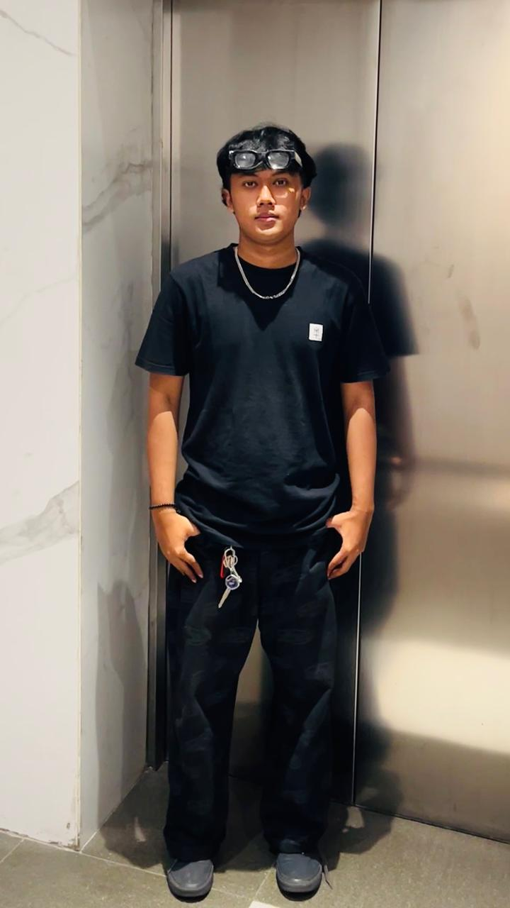
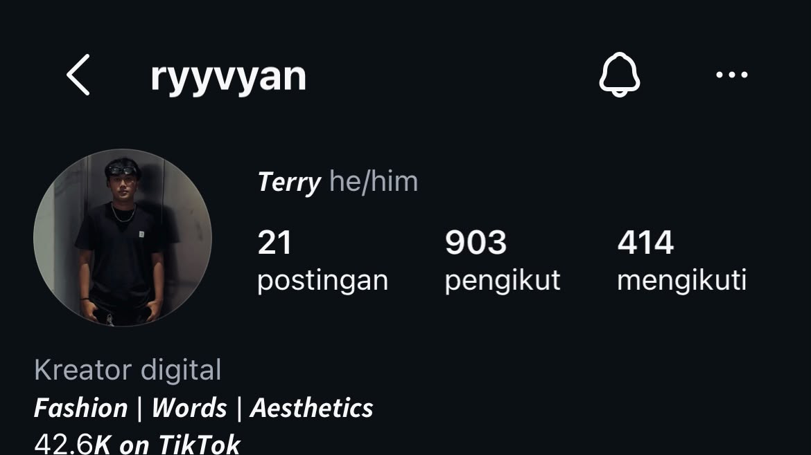
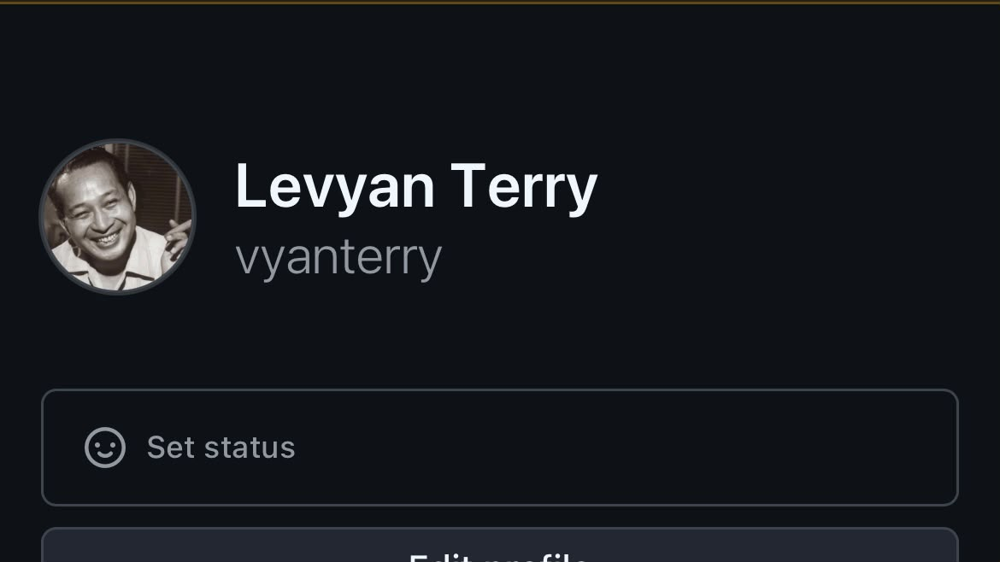

Content Creator / Surabaya
Levyan Terry
content creator yang berbagi cerita, lifestyle, dan berbagai momen menarik dengan cara yang autentik

02 / Playlist
Lagu Favorit
tiga lagu yang sedang menemani cerita kecil kuu
03 / Portfolio
Sosial Media
temukan saya di berbagai platformm

TIKTOK
✨ Just sharing my little world
📩 Business: DM
📸 Instagram: ryyvyan
Content & Lifestyle
Buka TikTok →

✨ Just sharing my little world
📩 Business: DM
📸 TikTok: @vyanterry
Content & Lifestyle
Buka Instagram →

GITHUB
Tempat saya berbagi project, eksperimen, dan karya digital.
Code & Projects
Buka GitHub →
04 / Tentang saya
Lebih Dari Sekedar Membuat Konten
saya percaya bahwa karya yang baik bukan hanya tentang apa yang terlihat, tetapi juga tentang cerita dan nilai yang ada di baliknyaa
melalui konten, saya senang membagikan cerita, pengalaman, dan berbagai momen dengan cara yang sederhana, autentik, dan relevann
05 / Hubungi saya
Mari ngobrol.
Punya ide atau ingin berkolaborasi? Hubungi saya melalui media sosial